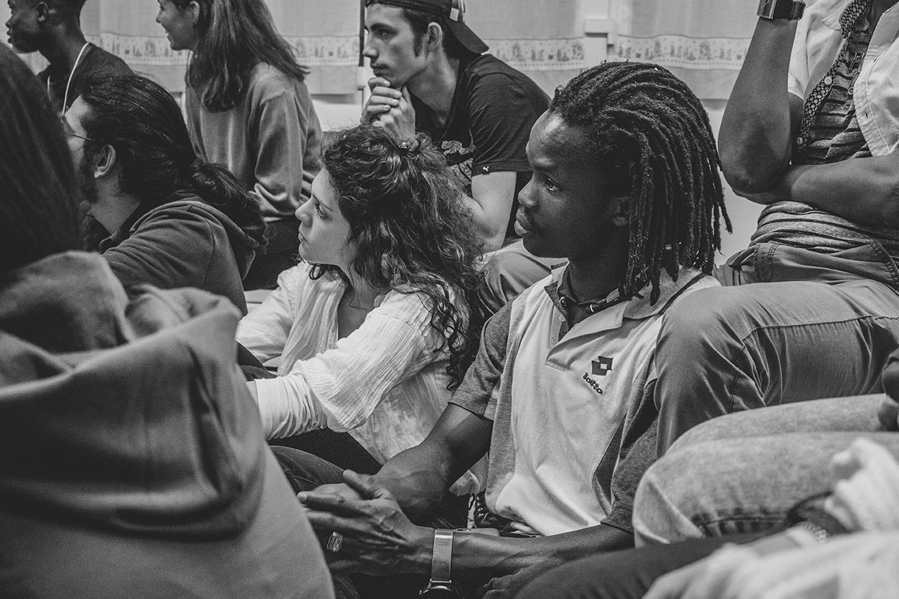
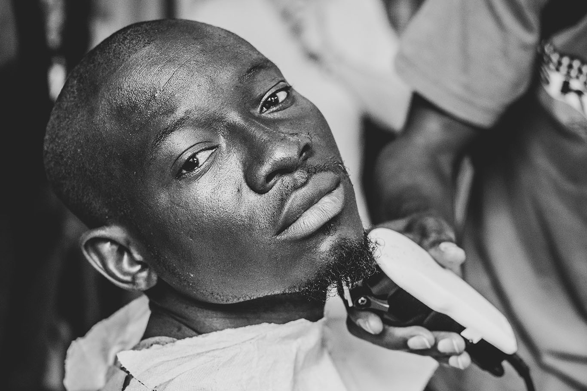
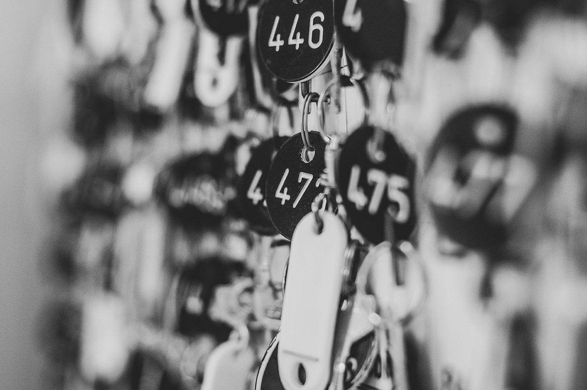
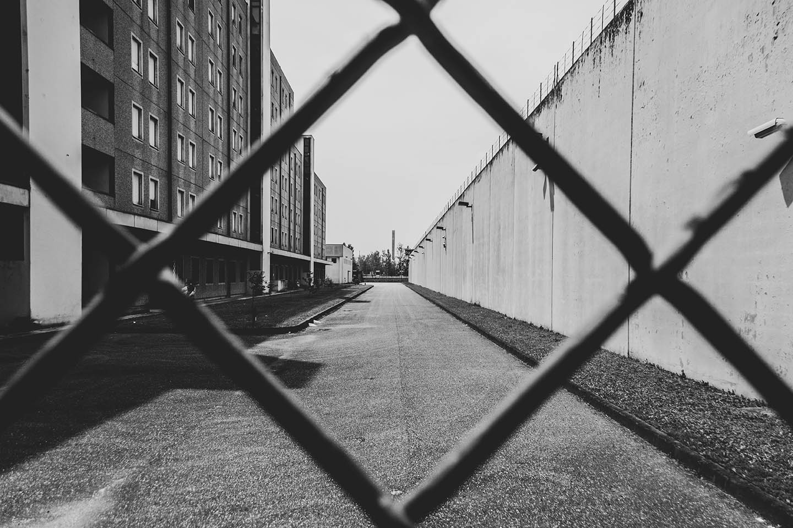

Home
Il progetto
About us
Intrecci
Fai della tua storia una testimonianza importante
COMO
Arte Migrante
NonDiSoleBriciole
/
MILANO
Casa di accoglienza E. Jannacci
Alfabeti ONLUS
Carcere di Bollate
/
PERUGIA
Comunità di Capodarco
Uno in più
   
-
+
"Lo sbaglio è pensare che le persone che vivono qui siano diverse dalle persone che vivono fuori."
Cesare Prina, ex direttore della casa di Accoglienza Enzo Jannacci
28 maggio 2018, Como
Non di sole briciole
Il progetto è nato dalla volontà di creare un’iniziativa all’interno dell’ambito sociale, per aiutare persone di cui spesso ci dimentichiamo, cercando di regalare loro un momento di attenzione e cura della persona.
26 maggio 2018, Milano
Carcere di Bollate
La II Casa di Reclusione di Milano–Bollate è attiva dal dicembre 2000 e sin dalla sua apertura si è presentata come istituto a vocazione trattamentale con l’obiettivo di realizzare su grande scala un progetto a custodia attenuata, volto alla graduale inclusione sociale dei detenuti.
17 maggio 2018, Como
Arte Migrante
Arte Migrante nasce nel settembre del 2012 per iniziativa di un giovane studente di antropologia, Tommaso Carturan. L’iniziativa nasce come esperienza di libera condivisione artistica e nel giro di poco tempo si propaga in tutta Italia con la sua dirompente carica festosa.
16 maggio 2018, Milano
Casa di Accoglienza E. Jannacci
È una delle più antiche case dell’accoglienza d’Italia, offre di notte a chi è senza dimora, “persone adulte in difficoltà, in grave stato di bisogno, prive di una diversa risorsa alloggiativa e senza mezzi economici per procurarsela”, un letto caldo, un bagno pulito e delle coperte.
9 maggio 2018, Milano
Alfabeti
L’Associazione “Alfabeti” costituita a Milano vent'anni fa, è un centro di apprendimento, di confronto e di vita associativa libero, democratico, autogestito e a carattere volontario.
4 maggio 2018, Perugia
Esperienza a Perugia
La comunità di Capodarco nasce nel natale del 1966 come associazione di persone con problemi fisici, ad esempio tetraplegici, per emanciparsi dalla società e non rimanerne ai margini.